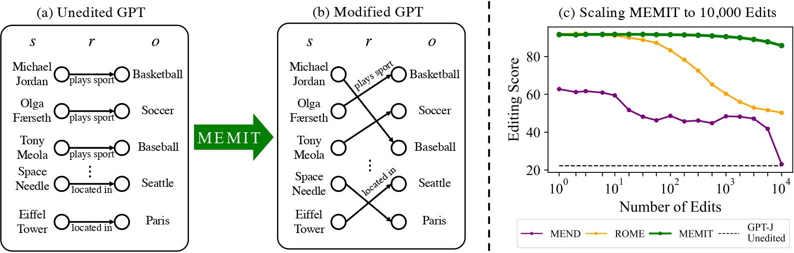
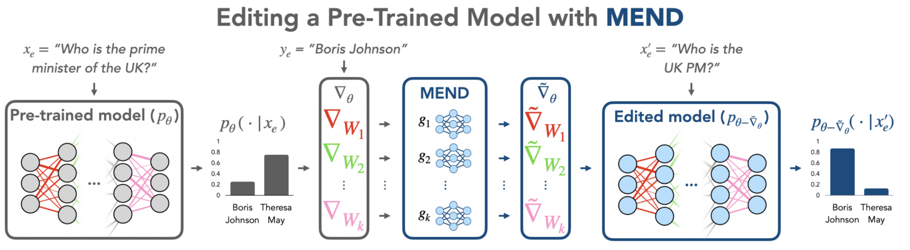
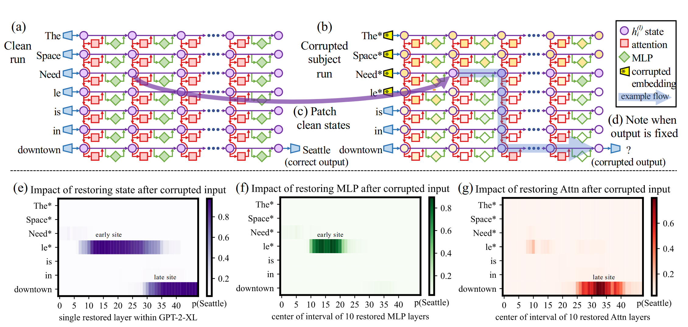
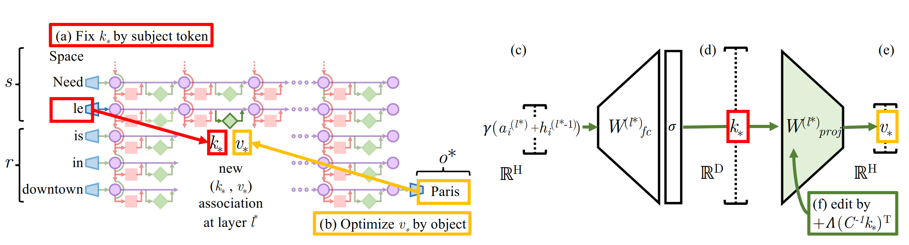
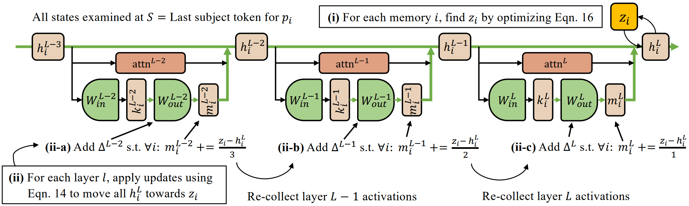
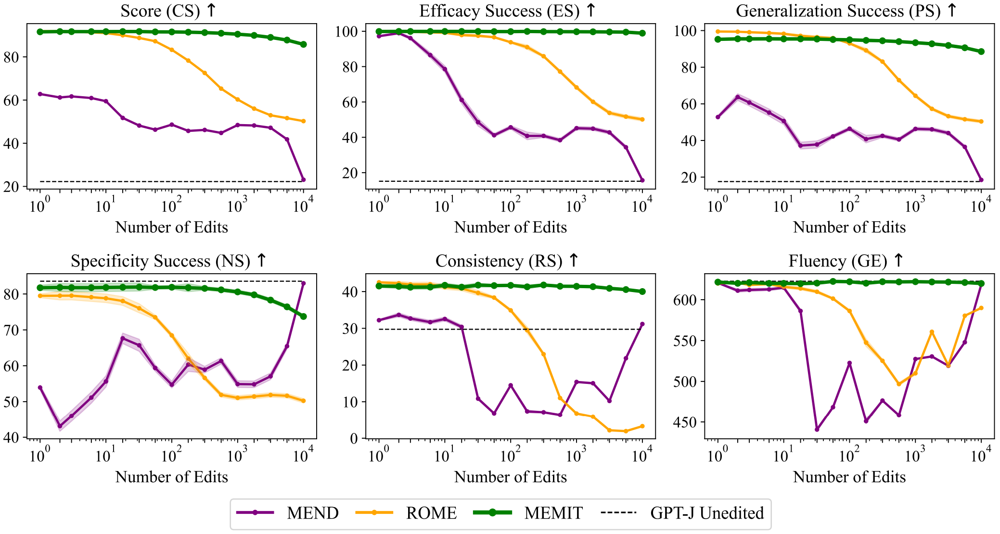

MEMIT introduces a scalable approach to edit factual knowledge in LLMs. Through causal analysis it identifies a range of early MLP layers in transformers that have a causal effect on fact recall, shedding light on the internal workings of LLMs. Leveraging the associative memory property of MLPs, it directly updates the weights of the MLPs in the causal range, minimizing undesirable changes to the network.
Citations: 353, HI: 5, MSCS MIT, Cofounder of Ember Labs
Citations: 16,000+, HI: 38, MS CS Cornell, PHD CS MIT, Worked at Google, Microsoft, Professor NEU (currently)
Citations: 2800, HI: 15, MSCS MIT, Currently pursuing PHD in Electrical Engineering & Computer Science MIT
Citations: 8100+, HI: 43, PHD in Electrical Engineering & Computer Science MIT, Faculty at Technion Taub Faculty of CS
Citations: 130, HI: 5, Phd in CS Northeastern University
Due to the large volumes of data that LLMs are trained on, they store the factual information within their parameters, which are recalled when the associated information is presented. As a result, LLMs are often viewed as knowledge bases [1] capable of retrieving relevant knowledge on request. However, unlike traditional knowledge bases like relational databases, the knowledge present is not explicit and cannot be directly located and updated. Therefore, developing tools to interface with information present in such abstract systems is a critical and exciting field of research.
Causal analysis [2] are methodologies that aim to identify relationships where one variable directly or indirectly affects another. It goes beyond mere correlation, seeking to establish a cause-and-effect link. Particularly, causal mediation analysis identifies an intermediary variable (mediator) that transmits the effect of one variable on another in a path [3]. Such approaches are traditionally common in fields like social sciences and clinical studies. Recently, with neural networks becoming increasingly complex and opaque, causal analysis has become a powerful toolkit for dissecting and understanding neural networks.
 MEND [4] learns to transform raw fine-tuning gradients into more targeted parameter updates. It uses an edit training set to produce a collection of model editor networks which apply edits at the test time. Specifically, it decomposes really large gradients to lower-rank decomposition which allows the model editor networks to efficiently update parameters in a localized way.
ROME [5] paper analyzes the storage and recall of factual associations in transformer language models. First, the paper develops a causal intervention that identifies neuron activations that are decisive in the model's factual predictions. This reveals that middle layer feed-forward modules play an important role because they control factual predictions when processing subject tokens. To test this, the paper modifies feed forward weights to update specific factual associations using Rank-One Model Editing (ROME). Each fact is represented as a knowledge tuple t = (s, r, o) containing the subject s, object o, and relation r connecting the two. In Figure 1a below, the subject is “The Space Need le”, relation is “is in downtown”, and object is “Seattle”. Figure 1a is a clean run where the factual prompt x is passed into G (autoregressive transformer language model) outputting Seattle. In Figure 1b, the baseline corrupted run, the subject token (“The* Space* Need* Le*”) is a corrupted embedding and the first hidden state of all the tokens have added noise resulting in an output object that is incorrect and most probably not "Seattle". In a third run, corrupted-with-restoration-run, G runs computations on the noisy embedding same as the corrupted run except for some token and layer. For some token and layer, a clean hidden state is presented (purple arrow from Fig 1a to Fig 1b) that shows the clean state in 1b and flow of information. The ability of few clean states to recover the fact “Seattle” even though many states are corrupted can show each state’s contribution towards a correct factual prediction. Specifically, Figure 1g shows that attention plays an effect during later layers in the last token “downtown” before predicting “Seattle”. This seems obvious that the token before prediction would be significant, but what is interesting is Figure 1f. This shows in order to predict “Seattle”, the last subject token is important and in the earlier hidden layers for the MLP. 
Based on this analysis and measuring the average indirect effect of MLP’s (seen below in diagram for MEMIT), the next idea of the paper is whether it is possible to change a factual association. This can be seen in the figure below that associates the subject “The Space Needle” with the new object o* (“Paris”). To create this new factual association, ROME modifies the weights of the already trained MLP in the middle layer of the last subject token “le”. More specifically, ROME inserts a new (k*, v*) association where the key k* is determined by the subject and value v* is optimized to select the new object o* (in this case Paris). As can be seen in the diagram below, in order to write the new value vector v* into the layer, a rank one update is calculated ( W-hat = W + Λ(C−1k∗)T) resulting in W-hat k* = v*. 
MEMIT builds on the observations from the causal analysis in ROME. Through causal mediation analysis observed that the middle MLP layers play a central role in factual recall. In the figure below, we see that severing the MLP layers in the middle layers results in a significant drop in the causal effect of the hidden state on the output, indicating the significance of the MLP layers in recalling memory.
Further, it generalizes its update method to work with a batch of edits instead of a single edit. The generalized method, which relies on the classical view of linear layers as associative memory, still uses a closed-form solution to update the weights of the desired MLP modules in the network. By explicitly presenting the subject and the desired fact to be edited, the method can directly update the factual information represented by the MLP layers with minimal changes to the network, preventing any undesirable effects on the model’s performance. The figure below illustrates the perspective of MLPs as associative memory.
Moreover, unlike ROME which performs all the updates on a single MLP layer, MEMIT spreads it across a range of causal MLP layers in the transformer model. This is especially important to allow large-scale edits due to the observation that multiple updates on a single layer can result in a bottleneck MLP layer that degrades the performance of the overall model. The figure below illustrates the update process. 
As a result of these systemic updates, MEMIT scales (near-linearly) significantly better with the number of edits compared to other methods for knowledge-editing. The scaling curves under various performance metrics are shown below. 
MEMIT consistently outperforms other methods across various performance metrics on zsRE dataset, and on several metrics on the COUNTERFACT dataset.
Misinformation on the internet is one of the biggest problems in our information era. With public data from the internet being the primary source of training data for LLMs, they are no exception to the issue. Knowledge-editing methods provide us a way to tackle this issue by allowing
Knowledge editing allows for the customization of models for specific applications or user groups. For instance, an LLM can be tailored to provide more accurate and relevant information for educational purposes or for users in a particular geographical region. Moreover, it can also be used to keep the LLMs relevant by dynamicaly updating content with the latest information.
One can insert false information into the model when it was previously present in the data that it was built on. While previously, the challenge of expensive re-training of models made it difficult to alter the information stored and presented by an LLM, these types of approaches make it significantly easier for anyone who can gain access to the models to make inexpensive edits that can have a harmful effect on society.
Crowdsourcing specific factual edits instead of re-training models with latest data. In the example below, we see that ChatGPT service is tied to the information available in its training data which often does not reflect the current events.
Correct misinformation in public models. Since LLMs are generally trained on large amounts of user-generated data from the internet, it is possible that they learn certain misinformation or misrepresent facts. This can be harmful especially for models that are available for public use. Knowledge-editing can be very useful in these circumstances.
Content localization. Companies operating in multiple regions can use knowledge-editing to localize content, ensuring that it is culturally relevant and accurate for each market.
MEMIT introduces a scalable approach to edit factual knowledge in LLMs. Through causal analysis it identifies a range of early MLP layers in transformers that have a causal effect on fact recall. By spreading updates to the weights across these MLP layers, it is able to effectively edit memory in LLMs.
Currently the model limits itself to facts of the form (subject, relation, object), which limits the scope of the nature of facts that can be edited. Experiments are also limited to GPT-J and GPT-NeoX models; it is not clear if the observations generalize to different architectures.
| Soudness | 3 |
|---|---|
| Presentation | 3 |
| Contribution | 4 |
| Overall | 7 |
| Confidence | 4 |
The paper "Mass-Editing Memory in a Transformer (MEMIT)" proposes a novel method for updating large language models with new memories, scaling up to thousands of edits. MEMIT directly manipulates layer parameters of transformers, offering substantial improvements over previous methods in terms of specificity, generalization, and fluency.
A notable limitation is its focus on directional relations, which may not cover comprehensive knowledge types like spatial/temporal reasoning or procedural knowledge.
| Soundness | 4 |
|---|---|
| Presentation | 4 |
| Contribution | 4 |
| Overall | 8 |
| Confidence | 4 |
[1] Fabio Petroni, Tim Rocktäschel, Sebastian Riedel, Patrick Lewis, Anton Bakhtin, Yuxiang Wu, and Alexander Miller. Language models as knowledge bases? Proceedings of the 2019 Conference on Empirical Methods in Natural Language Processing and the 9th International Joint Conference on Natural Language Processing
[2] Pearl, J. Causality: Models, Reasoning and Inference. Cambridge University Press, USA, 2nd edition, 2009. ISBN 052189560X.
[3] Vig, J., Gehrmann, S., Belinkov, Y., Qian, S., Nevo, D., Singer, Y., and Shieber, S. M. Investigating gender bias in language models using causal mediation analysis. In NeurIPS, 2020b.
[4] Eric Mitchell, Charles Lin, Antoine Bosselut, Chelsea Finn, and Christopher D. Manning. Fast model editing at scale, 2021.
[5] Kevin Meng, David Bau, Alex Andonian, and Yonatan Belinkov. Locating and editing factual associations in GPT. Advances in Neural Information Processing Systems, 35, 2022.
[6] Kevin Meng, Arnab Sen Sharma, Alex Andonian, Yonatan Belinkov, and David Bau. Mass-editing memory in a transformer. arXiv preprint arXiv:2210.07229 (2022).
Surya Krishnamurthy
Karan Shah